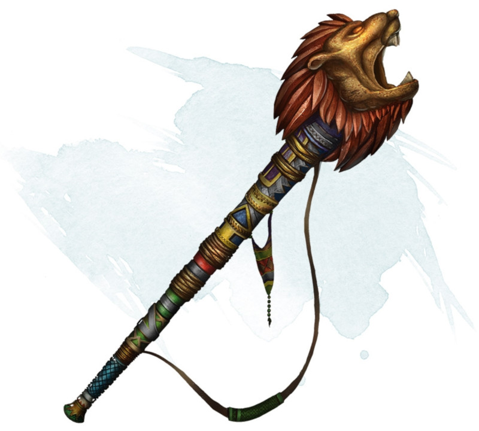

Cor de dévastation
[ Horn of Blasting ]
Objet merveilleux, rare
Vous pouvez utiliser une action pour prononcer le mot de commande du cor puis souffler dedans. Le cor produit alors une explosion tonitruante dans un cône de 9 mètres et qui est audible à 180 mètres à la ronde. Chaque créature présente dans le cône doit effectuer un jet de sauvegarde de Constitution DD 15. En cas d'échec, une créature subit 5d6 dégâts de tonnerre et est assourdie pendant 1 minute. En cas de réussite au jet, une créature ne subit que la moitié des dégâts et n'est pas assourdie. Les créatures et les objets faits de verre ou de cristal ont un désavantage à leur jet de sauvegarde et subissent 10d6 dégâts de tonnerre au lieu de 5d6.
Chaque utilisation de la magie du cor a 20 % de risque d'entraîner sa propre explosion. L'explosion inflige 10d6 dégâts de feu à celui qui souffle dedans et détruit le cor.
Chaque utilisation de la magie du cor a 20 % de risque d'entraîner sa propre explosion. L'explosion inflige 10d6 dégâts de feu à celui qui souffle dedans et détruit le cor.
Dungeon Master´s Guide (SRD)
